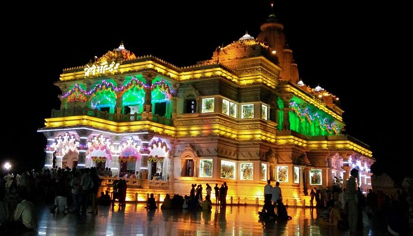

Famous Places
Taj Mahal

The Taj Mahal is an ivory-white marble mausoleum on the right bank of the river Yamuna in Agra, Uttar Pradesh, India. It was commissioned in 1631 by the fifth Mughal emperor, Shah Jahan (1628–1658) to house the tomb of his beloved wife, Mumtaz Mahal; it also houses the tomb of Shah Jahan himself. The tomb is the centrepiece of a 17-hectare (42-acre) complex, which includes a mosque and a guest house, and is set in formal gardens bounded on three sides by a crenellated wall.
Agra Fort

The Limestone cave formations at Nayadera and the vast mangrove-covered creeks are the main attractions for tourists in Baratang. The island is known for limestones, which deposit themselves either above the soil or under the ground forming interesting formations and layers. You can easily get a boat at the Nilambur jetty, which will take you to the famous caves. On the way, you can admire scenic coastline covered with mangrove forests and you even pass through mangrove-covered canals making the ride more exciting.
Ganges River

The Ganges is a trans-boundary river of Asia which flows through India and Bangladesh. The 2,525-kilometre-long (1,569 mi) river rises in the western Himalayas in the Indian state of Uttarakhand. It flows south and east through the Gangetic plain of North India, receiving the right-bank tributary, the Yamuna, which also rises in the western Indian Himalayas, and several left-bank tributaries from Nepal that account for the bulk of its flow.
Prem Mandir
Prem Mandir is a Hindu temple in Vrindavan, Mathura, India. It is maintained by Jagadguru Kripalu Parishat, an international non-profit, educational, spiritual, charitable trust. The complex is on a 54-acre site on the outskirts of Vrindavan, and is dedicated to Lord Radha Krishna and Sita Ram.